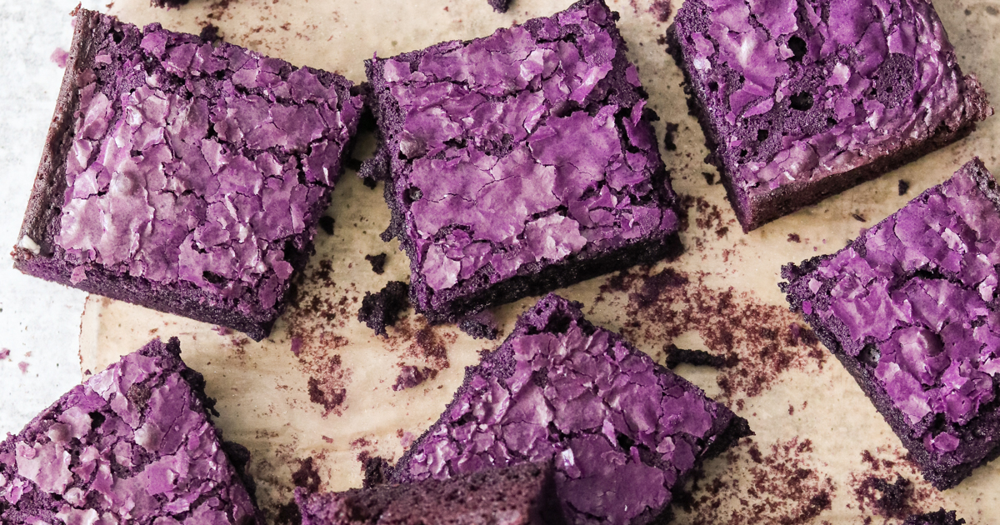
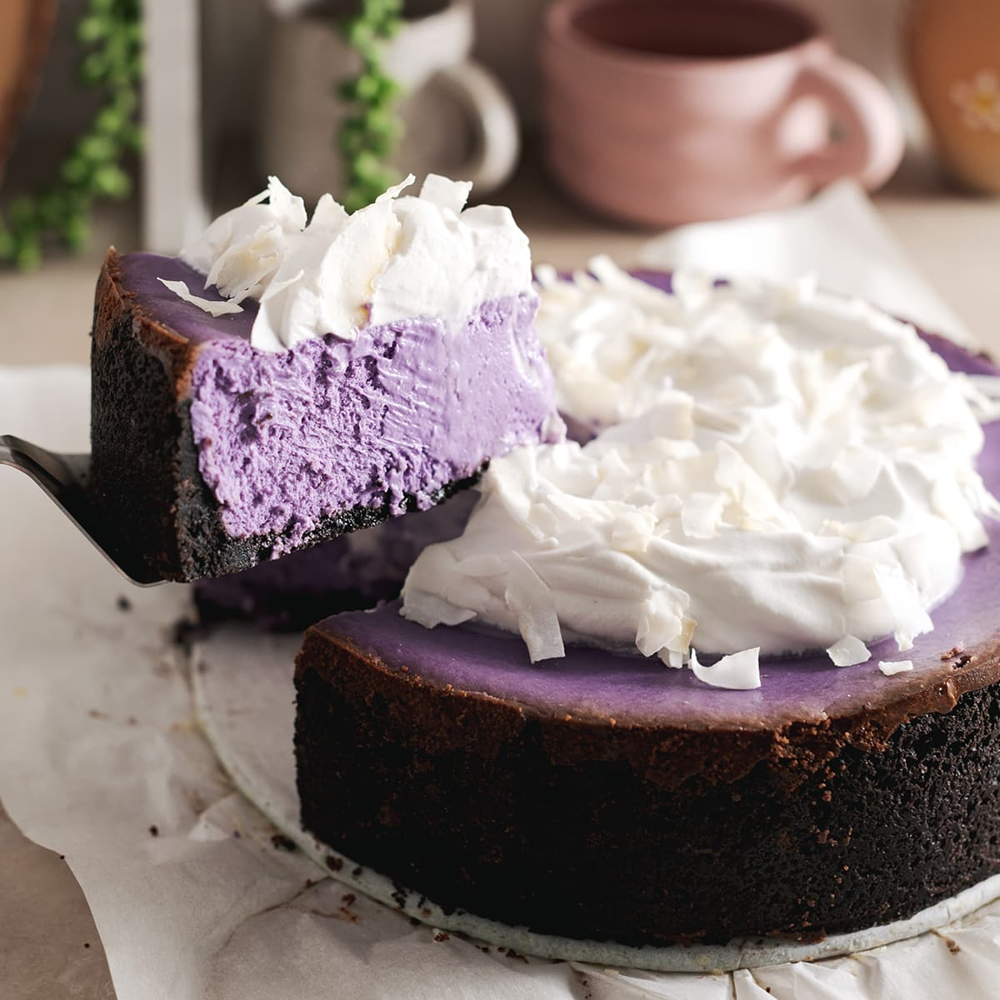

Recipes
Ube Brownies
Origin
The place of origin for Ube Brownies is: Philippines
Source
Link To Recipe WebsitePhoto Gallery
Ingredients
- 1/2 cup butter
- 1/2 cup white sugar
- 1/2 cup brown sugar
- 2 eggs
- 1 teaspoon vanilla extract
- 1 cup all-purpose flour
- 1/2 cup unsweetened cocoa powder
- 1/2 teaspoon salt
- 1/2 teaspoon baking powder
- 1/2 cup ube halaya
Ube Cheesecake
Ingredients
- 1 1/2 cups graham cracker crumbs
- 1/4 cup white sugar
- 1/3 cup butter, melted
- 2 (8 ounce) packages cream cheese, softened
- 1 cup white sugar
- 1 cup sour cream
- 1 teaspoon vanilla extract
- 1/4 cup cornstarch
- 1/2 cup ube halaya
- 3 eggs